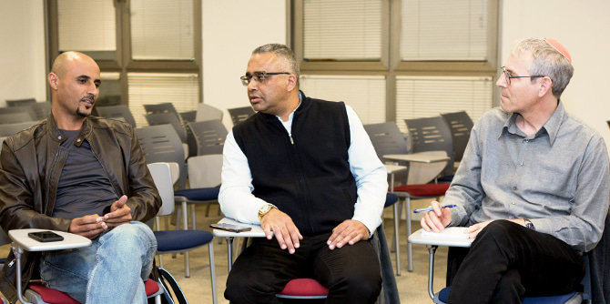
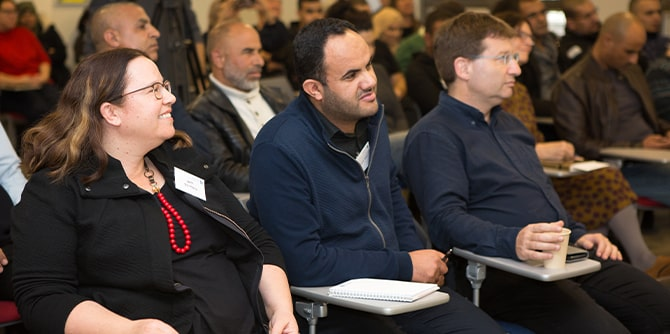
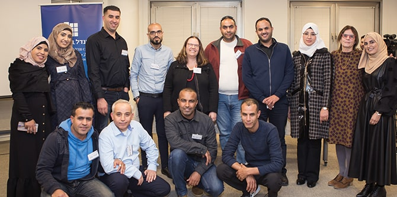

הערב התקיים כחלק מתהליך הלמידה בשנה השנייה לתוכנית, שבה מפתחים העמיתים, קבוצה מעולה של 14 מנהיגים מאזור כסייפה וערערה-בנגב וסביבתן, פרויקטים בשלושה תחומי פעולה: חינוך, בריאות וקהילה. את המפגש הובילו העמיתים, מנהל התוכנית קאסם אלצראיעה וחברת הסגל ד"ר רותם ברסלר-גונן, והוא עסק בסוגיות בבריאות בחברה הערבית-בדואית בנגב – חברה שבטית הנמצאת בתהליכי צמיחה והשתנות שבמסגרתם ערכים מסורתיים פוגשים מודרנה.
הנתונים מציגים אתגרים רבים: אחוז גבוה של לקויות ומומים עקב נישואי קרובים ואי-עריכת בדיקות גנטיות, שיעור גבוה של ילדים הנפגעים בתאונות ביתיות, מצב ירוד של ביטחון הפרט ועוד. נושא הבריאות שימש במפגש מסגרת דיסציפלינרית – מקרה בוחן לסוגיה המושפעת ממשתנים סביבתיים רבים ובשל כך דורשת פעולה חברתית רב-מערכתית לשם הנהגת שינוי שיש לו אימפקט משמעותי לשיפור המציאות.

במפגש נכחו אנשי מפתח ובעלי עניין משפיעים במגוון מערכות החיים בנגב; עמיתים ובוגרים מקהילת מנדל נגב, בעלי תפקידים מהחברה הבדואית מתחומי החינוך, הרווחה והבריאות, ואנשי עמותות וחברה אזרחית נוספים אשר שואפים לשלב כוחות כדי לקדם בריאות וחוסן בחברה.
את האירוע פתחה ד"ר עדי ניר שגיא, מנהלת מרכז מנדל למנהיגות בנגב, אשר דיברה על חשיבותה של מנהיגות מחויבת לנוכח אתגרים הדורשים פעולה מנהיגותית הסתגלותית – “adaptive challenge”. מושג זה טבעו החוקרים מרטי לינסקי ורונלד הייפץ מאוניברסיטת הארוורד, ומשמעותו עשייה מנהיגותית המנווטת מהלך כוללני וסינרגטי על פני שדות הפעולה הרלוונטיים לשם שיפור איכות החיים, כלומר שותפות בין שחקנים שונים הפועלים יחד לשיפור המצב – כל אחד על בסיס יכולותיו.

לאחר מכן התקיימו שתי הרצאות; בראשונה הציג עמית התוכנית וסגן הרופא המחוזי בלשכת הבריאות מחוז הדרום, ד"ר פרחאן אלסאנע, תמונת מצב ומגמות בבריאות בחברה הערבית-הבדואית בנגב. ההרצאה השנייה, מפי פרופ' נדב דוידוביץ', ראש בית הספר לבריאות הציבור באוניברסיטת בן-גוריון בנגב, עסקה בפוליטיקה של בריאות בישראל ובתפקידה של החברה האזרחית בקידום איכות חיים. לדברי פרופ' דוידוביץ', בריאות מושפעת ממשתנים רבים שאינם בהכרח תלויים זה בזה. לדוגמה, לחינוך ולקהילה יש תפקיד מכריע בקידום בריאות ומניעת חולי, ולפיכך עבודה מתואמת בין-מערכתית המכוונת למטרה משותפת מאפשרת לקדם את שיפור תנאי החיים בחברה.
במסגרת המפגש הביאו עמיתי התוכנית לקדמת הבמה את סוג השינוי שהם שואפים להנהיג בחברה הערבית-הבדואית בנגב באמצעות הובלת מעגלי שיח עם השותפים לחזון. במעגלי השיח דנו בשיפור הבריאות בחברה הערבית-בדואית דרך שלושת שדות הפעולה שבהם בחרו להתמקד: הדיון בנושא חינוך עסק באורח חיים בריא בבית הספר; הדיון בנושא בריאות וחברה עסק ברפואה מניעתית במרחב הביתי, עם דגש על פיתוח מודעות ושילוב בין המשפחה, המערכות החינוכיות ומערכות הרווחה; והדיון השלישי, בנושא קהילה, עסק בבריאות ובמוגנות בקרב צעירים.

בתהליך המשמעותי שבו נמצאת החברה הערבית-הבדואית בנגב, תפקידה של הנהגה מקומית מחויבת ובעלת חזון הנכונה להתייחס להזדמנויות ולאתגרים הייחודיים לה – חשוב מאין כמוהו. העמיתים המחויבים מובילים עשייה משמעותית בבתי הספר וברחבי היישובים, מתוך שיח חשיפה למידע וגיוס כוחות חיוביים לשיפור המציאות.
הערב המשמעותי אפשר דיאלוג פתוח וחשוב בין אנשי מפתח משפיעים במגוון מערכות החיים בנגב, והדגיש את חשיבות המנהיגות של עמיתי התוכנית בכסיפה ובערערה בנגב ושל בוגרי תוכניות רהט, חורה, לקיה ותל שבע – אלה מהווים חלק מקהילת מנדל בנגב הפועלים לשיפור איכות החיים בנגב ככלל ובחברה הערבית-הבדואית בפרט.

{kind=link}
{kind=link}
{kind=link}